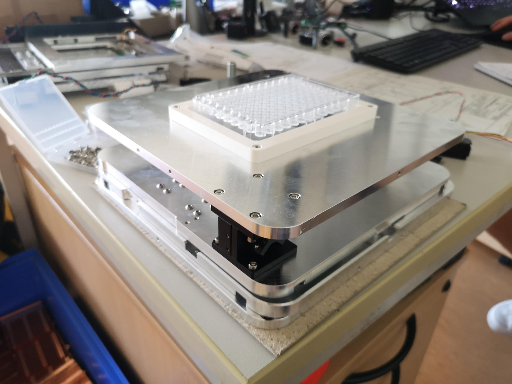

| Home | Program |
Join us for a week-long, hands-on journey into the world of modular, open-source microscopy. This workshop is designed to push the boundaries of traditional imaging by empowering participants to build and customize their own microscopes. With challenges in organoid sorting, bacteria staining, and advanced image processing, this course is perfect for those eager to innovate and create outside their comfort zone.
Discover how to design powerful imaging tools with 3D printing, microfluidics, and open hardware—all while connecting with experts and fellow makers from around the world. From technical workshops to creative design sessions, this event will help you turn ideas into instruments. Whether you're a biologist, engineer, or just curious about microscopy, Hack Your Microscope is the place to explore, learn, and contribute to the future of accessible imaging.
Ready to take on the challenge? Explore our program, and prepare to hack your microscope! PS: We are also very open for sponsorships, so if you are interested in supporting our event, please contact us.
Contact us at info@openuc2.com for more details or sponsorship inquiries. You can also follow our updates and sponsor announcements on social media or reach out for any assistance needed for planning your visit.
While scientific data must be shared and accessible, tools to create those data are often dark and closed boxes under bolts, patents and other legal issues that make them less open! Since a couple of decades, people have taken on the challenge of openness in the life science to the imaging field by creating reproducible systems that can be freely copied by any lab, anywhere at a fraction of the price of a commercial system. This is beneficial for low income countries that also need tools for their own challenges but also for open science allowing anybody to replicate data and tool that generate them. But, there are thousands of online tutorials and courses around the world to learn all kind of microscopy techniques with experts but only a fraction for learning open microscopy.
We aim at setting up the first international course in Europe to train the next generation of imaging scientists to build their own system to answer their own challenge. From part manufacturing to coding imaging workflow using off the shelves components, we will show students how to build systems and share data openly using many already successful open microscopy systems.
Hohlbein, J., Diederich, B., Marsikova, B. et al. Open microscopy in the life sciences: quo vadis?. Nat Methods 19, 1020–1025 (2022). https://doi.org/10.1038/s41592-022-01602- Salido J, Bueno G, Ruiz-Santaquiteria J, Cristobal G. A review on low-cost microscopes for Open Science. Microsc Res Tech. 2022 Oct;85(10):3270-3283. doi: 10.1002/jemt.24200. Epub 2022 Jul 25. PMID: 35879870; PMCID: PMC9796433.
|
|
 |
|